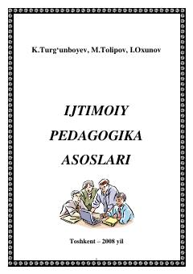

IPIjtimoiy pedagogikaning nazariy asoslari va shaxsni ijtimoiylashtirish jarayonlari haqida o‘quv qo‘llanma.
Ushbu o‘quv qo‘llanma ijtimoiy pedagogika fanining nazariy asoslari, shaxsning ijtimoiylashuv jarayoni va unga ta'sir etuvchi omillarni yoritib beradi. Kitobda yoshlarni jamiyatga moslashtirish, tarbiyaviy ishlar metodikasi va ijtimoiy-pedagogik faoliyatning o‘ziga xos xususiyatlari ilmiy-uslubiy jihatdan tahlil qilingan.